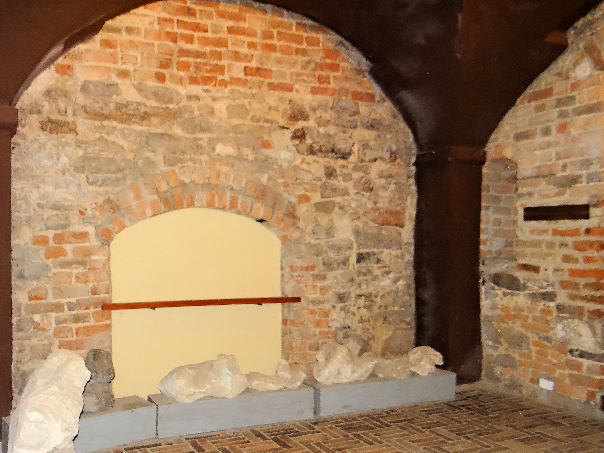

Podziemna Trasa Turystyczna w Sandomierzu
Połączony w trasę turystyczną zespół dawnych miejskich piwnic i składów, znajdujący się w Sandomierzu. Wejście do podziemi znajduje się przy Rynku 10 (boczne wejście od ul. Oleśnickich), natomiast wyjście - w budynku sandomierskiego Ratusza. Sandomierska trasa została udostępniona zwiedzającym w 1977 roku. Do jej powstania przyczyniły się występujące w latach 60-tych XX wieku zapadliska i katastrofy budowlane w mieście.